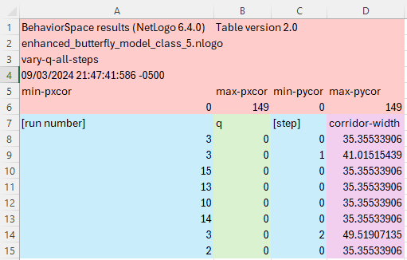
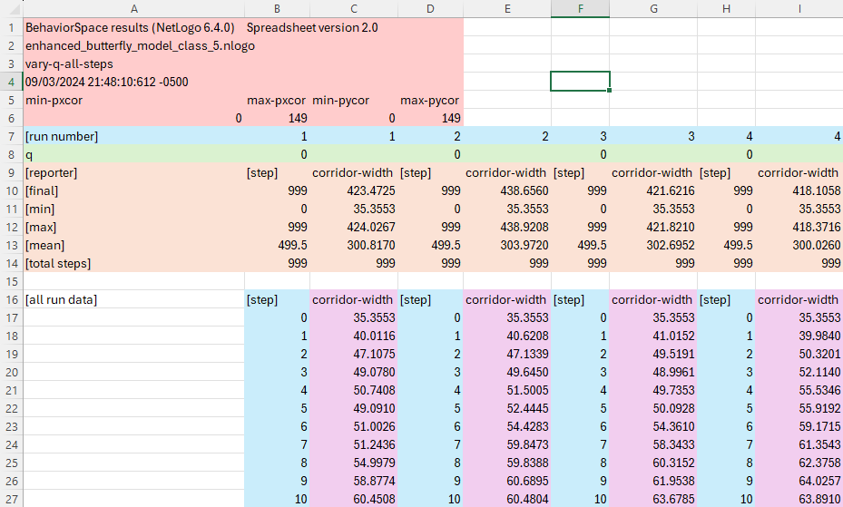
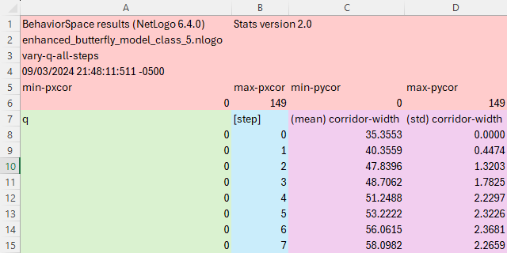
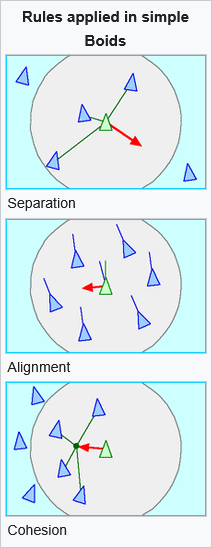
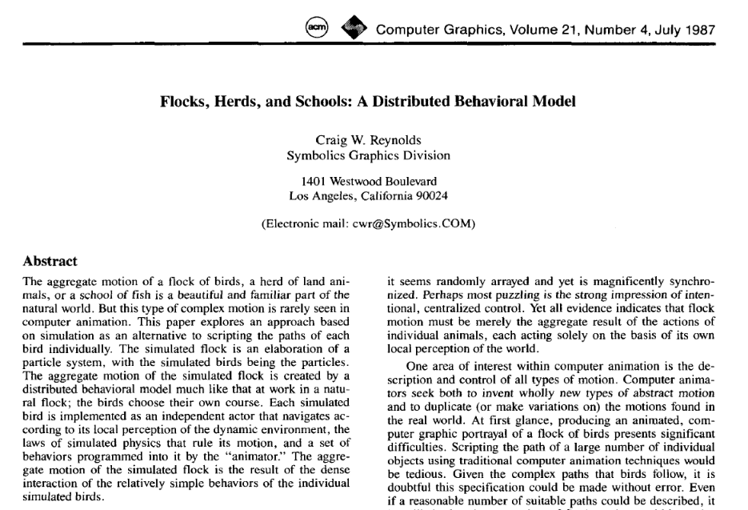

Your First Model
EES 4760/5760
Agent-Based and Individual-Based Computational Modeling
J. Magnolia Gilligan
Homework
Homework:
- In the mushroom hunt, were there always 80 red patches?
- Any questions about modified mushroom hunt model?
- Let’s talk about ODD exercise.
Writing a model from an ODD
- Questions about writing a model from Butterfly ODD?
- Were there things the ODD was unclear about?
Butterfly Model
Download the model
- Download butterfly model from ees4760.jmgilligan.org/models/class_05/butterfly_model_class_5.nlogox
- Or go to the “Downloads” page on the class web site ees4760.jmgilligan.org, click on “5. Butterfly Models” and download the “Basic Butterfly Model”
- You can download the final enhanced butterfly model we will write in class from “Ehanced Butterfly Model”, or https://ees4760.jmgilligan.org/models/class_05/butterfly_model_class_5.nlogox
Enhancing the Butterfly model
-
Put a slider for q
- In the “Code” page:
- Remove q from the global variables
- Remove the initialization of q from
to setup
- In the “Code” page:
-
Add patches-own variable to indicate whether it was visited.
patches-own [ elevation visited? ; question mark reminds us it's a true/false variable ] to setup ... ask patches [ set visited? false ... ] ... end -
Add turtles-own variable to remember the patch where it started.
turtles-own [ origin ]
Enhancing the Butterfly model
- Put a slider for q
- Add patches-own variable to indicate whether it was visited.
- Add turtles-own variable to remember the patch where it started.
- Set the number of butterflies to 50.
- Stop butterfly from moving if it’s at the top of a hill.
- How can you tell whether it’s on the top?
Enhancing the Butterfly model
-
Write a reporter for corridor width
\[ \text{Corridor width} = \frac{\text{\# patches visited}}{\text{distance from start}} \]
Put an observer on the interface
-
Define a reporter:
to-report corridor-width let pcount count patches with [visited?] let dist mean [distance origin] of turtles report pcount / dist end Is there a problem when you hit “Setup”?
Behaviorspace
Running Experiments: BehaviorSpace
- Vary any parameter that has a control on the model’s interface
- Writes output to
.csvspreadsheet file- Four options:
- Spreadsheet
- Table
- Statistics
- Lists (only useful if you also choose spreadsheet or table)
- Four options:
- Note: Data written in spreadsheet or table might be out of order.
Behaviorspace Table Format

Behaviorspace Spreadsheet Format

Behaviorspace Stats Format

Analyzing Behaviorspace Output
- Behaviorspace output format is annoying.
- Each line is some tick of some run.
- How to organize, and average over runs?
- The new stats output helps with this, though.
- analyzeBehaviorspace app:
- On the web at https://ees4760.jmgilligan.org/analyze-behaviorspace
- Install on your own computer using R.
Instructions at https://github.com/j-magnolia/analyzeBehaviorspace.
-
After installing:
library(analyzeBehaviorspace) launch_abs()
AnalyzeBehaviorspace
Emergence
Emergence
- A tricky concept.
- Joshua Epstein in Growing Artificial Societies: “stable macroscopic patterns arising from the local interaction of agents.”
- Epstein ten years later: “I have always been uncomfortable with the vagueness and occasional mysticism surrounding this word.”
- Epstein now prefers to talk about “Generative Social Science” instead of “emergence”
Examples of Emergence
Simple Flocking
Simple Flocking
- How do birds coordinate their flight to move in coherent flocks?
- Craig Reynolds:
boids1989boids only see nearby boids within some radius
-
Three principles of motion:
- Separation
- Turn away if too close to another boid
- Alignment
- Turn toward the mean direction neighbors are flying
- Coherence
- Turn toward mean position of neighbors (center)

- Separation

C.W. Reynolds, “Flocks, Herds, and Schools”, SIGGRAPH’87 25–34 (1987) doi: 10.1145/37401.37406
Boids in NetLogo
Geese Flocking
Complex Flocking: Starlings
Starling Murmuration
- Thousands of individuals
- unique and different
- interact locally
- show adaptive behavior

H. Hildenbrandt, C. Carere, & C.K. Hemelrijk, Behavioral Ecology, 21, 1349. DOI: 10.1093/beheco/arq149
Starling murmuration
By Liberty Smith & Sophie Windsor Clive, Islands and Rivers, https://vimeo.com/31158841
Flock of thousands of starlings
H. Hildenbrandt, C. Carere, & C.K. Hemelrijk, Behavioral Ecology, 21, 1349. DOI: 10.1093/beheco/arq149
Simulated flock of thousands of starlings
H. Hildenbrandt, C. Carere, & C.K. Hemelrijk, Behavioral Ecology, 21, 1349. DOI: 10.1093/beheco/arq149
Simulated flock of thousands of starlings
H. Hildenbrandt, C. Carere, & C.K. Hemelrijk, Behavioral Ecology, 21, 1349. DOI: 10.1093/beheco/arq149